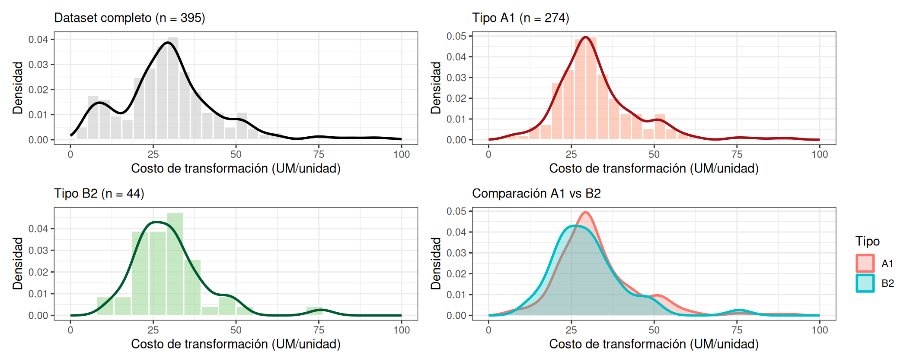
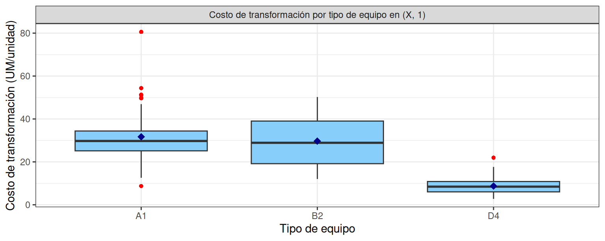
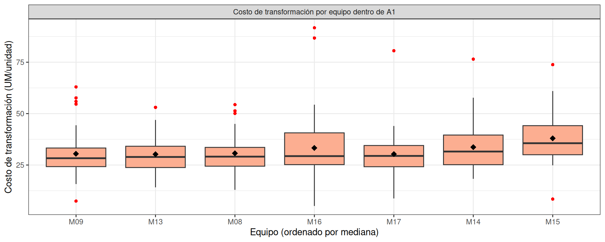
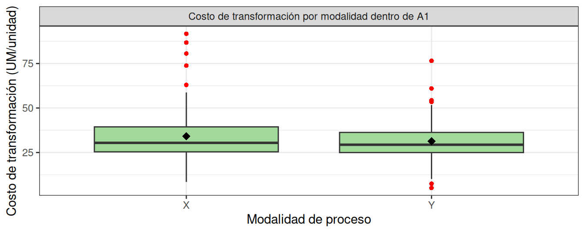
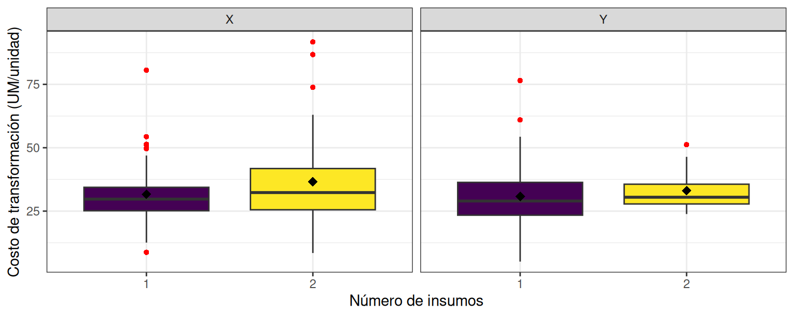
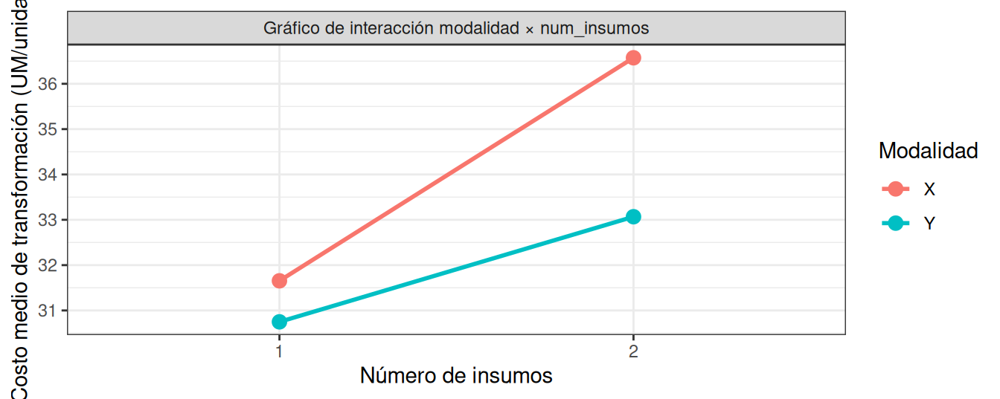

Capítulo 7 Análisis Exploratorio Estratificado

7.1 Mapa del espacio operativo válido
Antes de cualquier análisis, conviene caracterizar formalmente qué comparaciones son válidas dentro del dataset principal. La tabulación cruzada de las tres dimensiones operativas indica cuáles celdas tienen suficientes observaciones y cuáles están vacías.
7.1.1 Tabulación de combinaciones
| tipo_equipo | modalidad_proceso | num_insumos | n |
|---|---|---|---|
| A1 | X | 1 | 60 |
| A1 | X | 2 | 63 |
| A1 | Y | 1 | 118 |
| A1 | Y | 2 | 33 |
| B2 | X | 1 | 7 |
| B2 | X | 2 | 13 |
| B2 | Y | 1 | 18 |
| B2 | Y | 2 | 6 |
| D4 | X | 1 | 55 |
| tipo_equipo | X_1 | X_2 | Y_1 | Y_2 |
|---|---|---|---|---|
| A1 | 60 | 63 | 118 | 33 |
| B2 | 7 | 13 | 18 | 6 |
| D4 | 55 | 0 | 0 | 0 |
Lectura del mapa. Las celdas con mayor n marcan el universo de comparaciones donde la inferencia tiene sustento estadístico. Las celdas vacías o con n bajo definen las preguntas que el dataset no puede responder.
7.1.2 Identificación de comparaciones válidas
Tres comparaciones son metodológicamente sólidas dentro del dataset principal:
Inter-equipos en (X, 1): la única celda donde A1, B2 y D4 coexisten con n suficiente. Es el único estrato donde la pregunta “¿los equipos difieren en costo?” tiene respuesta limpia. Intra-A1 (modalidad × num_insumos): A1 es el único equipo con cobertura completa de las cuatro combinaciones (X/Y × 1/2). Permite estudiar efectos de modalidad e insumos sin contaminación entre equipos. Intra-B2 (modalidad × num_insumos): B2 también cubre las cuatro combinaciones, con n más reducido. Permite análisis condicional con cautela y comparación cualitativa con A1.
Estas tres comparaciones organizan las secciones 7.3 a 7.5. Conclusiones (Mapa operativo):
El dataset principal admite tres tipos de comparaciones condicionales válidas; el resto requiere supuestos no verificables. A1 es la configuración universal del análisis: única con cobertura completa. (X, 1) es el único estrato inter-equipos limpio.
7.2 Efecto puro del tipo de equipo dentro de (X, 1)
Esta es la pregunta que parecía obvia al inicio del Capítulo 6 y que terminó siendo metodológicamente delicada: ¿los equipos difieren realmente en costo, o esa diferencia se confundía con la modalidad y los insumos?
7.2.1 Subconjunto y estadísticos descriptivos
La distribución por tipo de equipo es:
| tipo_equipo | n | media | ds | 50% | minimo | maximo | Q1 | Q3 | IQR |
|---|---|---|---|---|---|---|---|---|---|
| A1 | 60 | 31.653737 | 11.715412 | 29.735868 | 8.756984 | 80.57443 | 25.154262 | 34.38846 | 9.234201 |
| B2 | 7 | 29.646597 | 14.760690 | 28.898809 | 12.025943 | 50.22381 | 19.164527 | 39.02428 | 19.859757 |
| D4 | 55 | 8.819827 | 3.540393 | 8.458577 | 2.766110 | 21.99044 | 6.027059 | 10.85749 | 4.830435 |
7.2.2 Boxplot del costo de transformación en (X, 1)

a
Magnitud de la diferencia entre A1, B2 y D4 dentro de (X, 1). Si la diferencia entre D4 y A1 que aparecía en el Capítulo 6 (sección 6.5.5) se mantiene cuando se controla el estrato. Si la posición relativa de B2 cambia respecto al análisis marginal. Discusión del n: B2 tiene n=7 en este estrato, lo cual limita la robustez de la conclusión.
Para completar esta sección:
Replicar el análisis para costo_insumo dentro de (X, 1): tabla resumen y boxplot. Usa el mismo patrón cambiando costo_transformacion por costo_insumo. Replicar para costo_unitario_total dentro de (X, 1). Generar un gráfico combinado con patchwork que muestre los tres boxplots lado a lado para facilitar comparación. Interpretar las diferencias entre los tres costos: ¿el ranking de equipos se mantiene en transformación, insumo y total? Si cambia, anótalo como hallazgo relevante.
7.3 Análisis intra-tipo: heterogeneidad dentro de las familias
El análisis del Capítulo 6 (sección 6.5.6) sugirió que dentro de cada tipo de equipo existen comportamientos distintos. Esta sección lo formaliza dentro del dataset principal, donde C3 ya está excluido y la lectura de A1 y D4 se limpia de outliers extremos asociados a configuraciones excepcionales.
7.3.1 Familia A1: ¿siete equipos coherentes?
| equipo_id | n | media | ds | 50% | Q1 | Q3 | IQR |
|---|---|---|---|---|---|---|---|
| M13 | 36 | 30.30618 | 9.351186 | 28.92011 | 23.77861 | 34.13558 | 10.356968 |
| M17 | 44 | 30.31086 | 11.170832 | 29.43079 | 24.17705 | 34.49526 | 10.318207 |
| M09 | 36 | 30.46855 | 12.159829 | 28.30983 | 24.22474 | 33.27041 | 9.045671 |
| M08 | 32 | 30.75338 | 9.362068 | 29.08394 | 24.44062 | 33.57619 | 9.135572 |
| M16 | 43 | 33.31158 | 16.380168 | 29.33401 | 25.19359 | 40.64056 | 15.446962 |
| M14 | 40 | 33.75485 | 12.232435 | 31.56359 | 25.16327 | 39.58087 | 14.417596 |
| M15 | 43 | 38.01583 | 11.775535 | 35.60816 | 30.00709 | 44.14519 | 14.138099 |

¿El rango de medias entre los siete equipos A1 es estrecho o amplio? ¿Hay equipos con dispersión interna marcadamente distinta? ¿La conclusión del Capítulo 6 (“A1 es una familia coherente”) se sostiene tras eliminar las órdenes Z?
Para completar esta subsección:
Replicar el análisis con costo_insumo dentro de A1. Calcular el coeficiente de variación entre las medianas de los siete equipos A1. Una variación intra-tipo baja confirma la hipótesis de “familia coherente”. Calcula así: sd(medianas) / mean(medianas) * 100. Comparar las medias actuales con las del Capítulo 6 (M15 era 38.0, M13 era 30.3, etc.). ¿La exclusión de Z modificó significativamente algún equipo? Construye una tabla con dos columnas: media_cap6 y media_cap7.
7.3.2 B2: un único equipo, ¿comparabilidad con A1?
B2 está representado por un único equipo (M02). Toda conclusión sobre “el tipo B2” es en realidad una conclusión sobre M02. Esta sección compara su perfil con el cluster A1 para responder: ¿la categoría B2 aporta información distintiva respecto a A1? Para completar esta subsección:
Construir una tabla resumen con M02 (B2) y los siete equipos A1, ordenados por media de costo de transformación, para visualizar dónde se ubica M02 en el ranking. Generar un boxplot conjunto con los ocho equipos (siete A1 + M02), coloreando por tipo (A1 en color cálido, M02 en color frío). Si M02 se mezcla visualmente con los A1, eso refuerza el hallazgo del Capítulo 6 sobre la indistinguibilidad económica. Replicar para costo_insumo. Discutir la implicación operativa: si M02 es indistinguible, ¿qué justifica mantener B2 como categoría tecnológica separada? Esta pregunta debe trasladarse al área técnica de la empresa, no resolverse estadísticamente.
7.3.3 D4: dos equipos eficientes pero distintos
D4 contiene dos equipos (M05 y M12) con perfil eficiente pero comportamientos diferentes entre sí. Para completar esta subsección:
Construir tablas resumen separadas para M05 y M12 en costos de transformación e insumo. Calcular adicionalmente el coeficiente de variación. Boxplot comparativo M05 vs M12 para los dos costos. Marcar visualmente los outliers (M05 tenía un máximo de 46.2 en costo de insumo). Análisis de outliers en M05: identificar la(s) orden(es) responsables de los valores extremos. Mostrar qué configuración tienen (volumen, duración, insumos) y discutir si parecen estructurales o circunstanciales. Restricción operativa: M05 y M12 solo operan en (X, 1). El análisis de su eficiencia no puede extrapolarse a otras configuraciones. Documentar esta limitación.
Conclusiones (Heterogeneidad intra-tipo):
7.4 Configuración universal A1: efectos de modalidad, insumos e interacción
A1 es el único equipo con cobertura completa de las cuatro combinaciones de modalidad y número de insumos. Aquí se evalúan los efectos puros de cada factor y, crucialmente, si interactúan entre sí.
7.4.1 Subconjunto y mapa de combinaciones
| modalidad_proceso | ins_1 | ins_2 |
|---|---|---|
| X | 60 | 63 |
| Y | 118 | 33 |
A1 contiene r n_A1 órdenes distribuidas en cuatro celdas de tamaño suficiente. Esto permite analizar simultáneamente los dos factores y su interacción.
7.4.2 Efecto principal: modalidad de proceso dentro de A1
| modalidad_proceso | n | media | ds | 50% | Q1 | Q3 | IQR |
|---|---|---|---|---|---|---|---|
| X | 123 | 34.17373 | 14.23261 | 30.42801 | 25.37595 | 39.40807 | 14.03212 |
| Y | 151 | 31.25549 | 10.32325 | 29.37574 | 24.95932 | 36.29595 | 11.33663 |

7.4.3 Efecto principal: número de insumos dentro de A1
Para completar esta subsección:
Construir el resumen descriptivo de costo_transformacion agrupando por num_insumos dentro de A1, siguiendo el patrón de la sección 7.5.2. Generar el boxplot correspondiente. Comparar con el análisis marginal del Capítulo 6. En el agregado, el paso de 1 a 2 insumos elevaba la media de 27.3 a 35.8. Calcular el equivalente dentro de A1 puro. Replicar para costo_insumo.
7.4.4 Interacción modalidad × número de insumos
Esta es la pregunta más fina del análisis estratificado: ¿el efecto de tener dos insumos depende de la modalidad? Si las dos modalidades responden de forma distinta a la complejidad de insumos, hay interacción.| modalidad_proceso | num_insumos | n | media | ds | 50% |
|---|---|---|---|---|---|
| X | 1 | 60 | 31.65374 | 11.715412 | 29.73587 |
| X | 2 | 63 | 36.57373 | 15.999751 | 32.31435 |
| Y | 1 | 118 | 30.74871 | 11.073769 | 28.98653 |
| Y | 2 | 33 | 33.06763 | 6.844797 | 30.47683 |


Cómo leer el gráfico de interacción. Si las dos líneas son paralelas, no hay interacción: el efecto de pasar de 1 a 2 insumos es el mismo en X que en Y. Si las líneas se cruzan o tienen pendientes distintas, sí hay interacción: el efecto de los insumos depende de la modalidad.
Para completar esta sección:
Replicar todos los análisis para costo_insumo dentro de A1: tabla cruzada, boxplots por facet y gráfico de interacción. Construir el gráfico de interacción para costo_unitario_total. Calcular las diferencias absolutas y relativas del efecto de num_insumos dentro de cada modalidad. Por ejemplo: en X, ¿cuánto sube el costo medio al pasar de 1 a 2 insumos? ¿Y en Y? Si las dos magnitudes son muy distintas, eso confirma interacción.
7.5 Combinaciones de insumos restringidas a A1 y B2
El Capítulo 6 (sección que tienes en tu render actual) analizó las combinaciones de insumos sobre el dataset completo. Aquí se replica restringiendo a A1 y B2 —los únicos equipos con cobertura amplia de combinaciones— para verificar si los patrones se mantienen tras controlar por equipo.
7.5.1 Tabla resumen restringida
| insumo_combinado | n | media | ds | 50% | Q1 | Q3 | IQR |
|---|---|---|---|---|---|---|---|
| B_T + sin_segundo_insumo | 88 | 26.18373 | 8.8721540 | 24.95932 | 21.13505 | 29.82597 | 8.6909211 |
| N_T + sin_segundo_insumo | 59 | 33.13060 | 8.4846058 | 32.01464 | 28.59968 | 37.45843 | 8.8587488 |
| N_O + sin_segundo_insumo | 23 | 39.14571 | 9.7864038 | 39.57461 | 31.45129 | 47.48353 | 16.0322357 |
| N_T + N_O | 20 | 33.53573 | 9.3841212 | 29.32622 | 27.77304 | 39.77638 | 12.0033371 |
| B_T + A_T | 18 | 24.85515 | 7.4260697 | 25.70475 | 20.77840 | 29.60049 | 8.8220895 |
| B_T + R_T | 18 | 37.15993 | 10.7803599 | 33.49531 | 30.58996 | 38.68800 | 8.0980441 |
| A_T + sin_segundo_insumo | 17 | 32.35429 | 14.1202841 | 29.93958 | 25.21598 | 34.79763 | 9.5816487 |
| B_T + V_T | 14 | 24.81689 | 4.3703288 | 23.97350 | 22.03007 | 26.15112 | 4.1210565 |
| N_O + N_T | 11 | 38.97754 | 17.5844355 | 35.60816 | 28.07363 | 42.95819 | 14.8845581 |
| R_T + sin_segundo_insumo | 9 | 40.60376 | 20.9928287 | 42.31702 | 26.15528 | 51.01074 | 24.8554561 |
| A_T + B_T | 8 | 41.31548 | 11.0517812 | 37.84286 | 34.33981 | 48.78550 | 14.4456902 |
| B_T + N_T | 8 | 40.08850 | 14.8161871 | 33.93466 | 33.34378 | 38.10776 | 4.7639862 |
| A_T + R_T | 7 | 54.54638 | 18.4790049 | 53.04372 | 44.33195 | 56.51862 | 12.1866744 |
| V_T + sin_segundo_insumo | 7 | 26.50901 | 6.7184275 | 26.21786 | 22.91967 | 29.94077 | 7.0210955 |
| N_T + B_T | 3 | 30.02081 | 3.0716996 | 30.07714 | 28.49924 | 31.57055 | 3.0713121 |
| B_T + N_O | 2 | 29.94753 | 0.8562099 | 29.94753 | 29.64482 | 30.25025 | 0.6054319 |
| N_O + B_T | 2 | 30.46950 | 3.7884858 | 30.46950 | 29.13007 | 31.80894 | 2.6788640 |
| R_T + A_T | 2 | 56.07840 | 25.0918729 | 56.07840 | 47.20708 | 64.94971 | 17.7426335 |
| R_T + B_T | 1 | 39.59964 | NA | 39.59964 | 39.59964 | 39.59964 | 0.0000000 |
| V_T + B_T | 1 | 24.44872 | NA | 24.44872 | 24.44872 | 24.44872 | 0.0000000 |
7.5.2 Comparación con el análisis del Capítulo 6
Para completar esta subsección:
Construir una tabla diferencial que muestre, para cada combinación de insumos:
Media en el dataset completo (Capítulo 6). Media restringida a A1 + B2 (este capítulo). Diferencia absoluta y porcentual.
Si la diferencia es pequeña, el patrón del Capítulo 6 era robusto. Si es grande, el patrón estaba contaminado por D4 o por C3. Identificar combinaciones que cambian de ranking. Por ejemplo, si una combinación era barata en el agregado pero cara restringida a A1+B2, eso indica que su bajo costo provenía de D4. Discutir el insumo N_O. En el Capítulo 6 era el principal driver de costo. Verificar si dentro de A1 y B2 mantiene ese rol o si pierde fuerza.
7.5.3 Boxplot
Para completar esta subsección:
Generar el boxplot de costo_transformacion por insumo_combinado restringido a A1 y B2. Usar coord_flip() por la cantidad de combinaciones. Replicar para costo_insumo. Generar un gráfico facet que separe A1 y B2, para visualizar si las combinaciones se comportan igual en ambos equipos o si hay diferencias.
7.6 Correlaciones condicionales
El análisis de correlaciones del Capítulo 6 mezcló los cuatro tipos de equipo. Aquí se calculan dentro de A1 únicamente para verificar si las asociaciones observadas globalmente son artefactos de la composición o relaciones genuinas dentro de un régimen homogéneo.
7.6.1 Matriz de correlación dentro de A1
| costo_transformacion | costo_insumo | costo_unitario_total | volumen_lote | duracion_proceso | cantidad_insumo_1 | cantidad_insumo_2 | |
|---|---|---|---|---|---|---|---|
| costo_transformacion | 1.000 | 0.211 | 0.944 | -0.261 | 0.161 | -0.071 | 0.132 |
| costo_insumo | 0.211 | 1.000 | 0.470 | -0.214 | -0.088 | 0.326 | 0.248 |
| costo_unitario_total | 0.944 | 0.470 | 1.000 | -0.314 | 0.099 | 0.007 | 0.192 |
| volumen_lote | -0.261 | -0.214 | -0.314 | 1.000 | 0.857 | 0.732 | 0.249 |
| duracion_proceso | 0.161 | -0.088 | 0.099 | 0.857 | 1.000 | 0.717 | 0.310 |
| cantidad_insumo_1 | -0.071 | 0.326 | 0.007 | 0.732 | 0.717 | 1.000 | 0.340 |
| cantidad_insumo_2 | 0.132 | 0.248 | 0.192 | 0.249 | 0.310 | 0.340 | 1.000 |
7.6.2 Comparación marginal vs condicional
Para completar esta subsección:
Calcular la matriz de Pearson dentro de A1, siguiendo el mismo patrón. Construir una tabla comparativa con tres columnas:
Correlación marginal (Capítulo 6). Correlación dentro de A1 (este capítulo). Diferencia.
Selecciona los pares más relevantes: volumen-costo, duración-costo, insumo 1-costo, insumo 2-costo. Identificar paradojas de Simpson o cambios de signo. Si alguna correlación cambia de signo o se debilita drásticamente al condicionar, eso indica que la correlación marginal era un artefacto. Verificar las economías de escala. En el agregado, volumen-costo era -0.32 (Spearman). Dentro de A1, debería seguir siendo negativa pero quizá más débil (porque el rango de volumen es similar dentro de A1). Si es muy diferente, hay que explicar por qué.
7.6.3 Diagramas de dispersión condicionales
Para completar esta subsección:
Generar diagramas de dispersión volumen_lote vs costo_transformacion facetados por modalidad dentro de A1. Esto muestra si las economías de escala operan igual en X que en Y. Replicar para duracion_proceso vs costo_transformacion. Generar un solo gráfico con volumen_lote vs costo_transformacion coloreando por equipo dentro de A1, para evaluar si todos los equipos A1 siguen el mismo patrón o si hay equipos que escapan.
7.7 Caracterización descriptiva de los subconjuntos excluidos
Esta sección documenta brevemente las órdenes excluidas del análisis estratificado. El propósito no es inferir, sino dejar trazabilidad y aportar referencia cualitativa sobre estos subconjuntos para el área operativa. ### Modalidad Z (n = 14)
| tipo_equipo | n | ct_media | ct_mediana | ci_media | ci_mediana | ctot_media |
|---|---|---|---|---|---|---|
| A1 | 13 | 42.89671 | 39.36351 | 6.238983 | 4.398346 | 49.13569 |
| B2 | 1 | 25.04945 | 25.04945 | 14.986640 | 14.986640 | 40.03609 |
7.7.1 Tipo de equipo C3 (n = 8)
| equipo_id | n | ct_media | ct_mediana | ci_media | ci_mediana |
|---|---|---|---|---|---|
| M04 | 4 | 79.35268 | 78.46310 | 13.836663 | 16.162889 |
| M11 | 4 | 49.36509 | 51.76305 | 8.674712 | 8.206842 |
Las órdenes Z muestran sobrecosto sistemático en transformación; el área comercial debería verificar si se está cobrando recargo proporcional. El tipo C3 contiene dos regímenes operativos heterogéneos (M04 y M11) que merecen análisis caso por caso. Con los n disponibles (14 y 8), ninguna conclusión sobre estos grupos puede extrapolarse al sistema general.
7.8 Síntesis e implicaciones
7.8.1 Qué se puede afirmar después del EDA estratificado
Sobre los efectos puros de cada factor (qué se confirma del Cap 6 y qué se modifica). Sobre la interacción modalidad × insumos dentro de A1 (si existe y de qué magnitud). Sobre la robustez de los hallazgos del análisis marginal (qué se sostiene y qué era artefacto). Sobre las economías de escala (si operan igual dentro de un régimen homogéneo).
7.8.2 Hipótesis para el capítulo de inferencia
Con base en el EDA estratificado, las pruebas inferenciales formales que tienen sustento son: HipótesisPrueba aplicableEstraton aproxH1: El costo de transformación difiere entre A1, B2 y D4ANOVA o Kruskal-Wallis(X, 1) únicamente~120H2: Dentro de A1, la modalidad afecta el costot-test o Mann-WhitneyA1 completo~270H3: Dentro de A1, el número de insumos afecta el costot-test o Mann-WhitneyA1 completo~270H4: Existe interacción modalidad × num_insumos en A1ANOVA 2 víasA1 completo~270H5: Existe correlación volumen-costo dentro de A1Correlación de Spearman con ICA1 completo~270H6: Las correlaciones marginales y condicionales difierenComparación de coeficientesAgregado vs A1373 vs ~270
7.8.3 Comparaciones que el dataset no permite hacer
Para transparencia metodológica, conviene documentar lo que el dataset no puede responder a pesar de la profundización:
Si D4 sería más eficiente que A1 en modalidad Y o con dos insumos: D4 nunca operó en esas configuraciones. Si C3 sería competitivo con volúmenes altos: las 8 órdenes de C3 no cubren rangos altos. Si la modalidad Z es más costosa que la suma simple de X e Y: n=14 no da potencia. Si las diferencias entre equipos del mismo tipo (M15 vs M13 en A1; M05 vs M12 en D4) son estructurales o técnicas: requiere estratificación adicional por categoría de producto.
Estas preguntas requerirían un diseño de recolección de datos distinto, con asignación deliberada de órdenes a configuraciones específicas para romper la dependencia entre factores.
7.9 Implicaciones financiera
Sobre el techo de eficiencia y la palanca real de costos. Sobre la política de pricing por modalidad y número de insumos. Sobre la asignación de órdenes a equipos. Sobre la oportunidad de estandarización (qué hace M12 más eficiente que M05).
Notas sobre el código Patrones que se repiten y que conviene tener identificados al replicar:
Resumen estadístico con las nueve métricas estándar (n, media, ds, 50%, mínimo, máximo, Q1, Q3, IQR) usando summarise(). Si lo aplicas mucho, conviene definir una función helper:
Definida una vez al inicio del capítulo, simplifica todos los summarise() posteriores. Decisión tuya si la usas o mantienes el patrón explícito del profesor.
Boxplot estándar: la combinación geom_boxplot + stat_summary(fun = mean) + facet_grid(. ~ “Título”) se repite muchas veces. Podrías encapsularla en una función, pero al estilo del profesor conviene mantenerla explícita en cada chunk para que el código sea didácticamente legible. Nombres de chunks: prefijar todos con eda7- para evitar colisiones con los chunks del Capítulo 6 al renderizar el libro completo. Por ejemplo: eda7-subset-X1, eda7-resumen-A1-mod, etc.